Vous êtes affecté·e à un ou plusieurs périmètres pour une période. L'espace organisateur vous montre vos tâches, leurs échéances et les fiches méthode qui expliquent comment les mener.
Ce mode d'emploi décrit les écrans ouverts à toute personne affectée. Si vous administrez une activité ou l'organisation, reportez-vous au mode d'emploi correspondant pour les groupes « Gérer l'activité » et « Gérer l'organisation » du menu.
Premier pas
Se connecter sans mot de passe
L'espace ne demande pas de mot de passe. Vous saisissez votre adresse mail, vous recevez un code à six chiffres, valable dix minutes, et vous le reportez dans l'écran de connexion. Le mail contient aussi un lien : il vous connecte directement quand vous l'ouvrez dans l'onglet où vous avez demandé le code.
Seules les personnes invitées par un admin peuvent se connecter. Si votre compte n'appartient à aucune organisation ouverte, l'écran vous invite à demander une nouvelle invitation.
Le menu de gauche
Il donne accès à Mon espace, au Rétroplanning, à l'Agenda, au Programme, aux Bénévoles, aux Ressources et aux Préférences. La section « Périmètres » commence par « Tous les périmètres » et « Organigramme », puis liste chaque périmètre où vous êtes affecté·e.
La barre du haut
Elle porte la recherche (une tâche, une fiche, une personne), la cloche des notifications et le menu de votre compte. Ce menu mène aussi aux modes d'emploi. Son entrée « Support » ouvre un mail à l'adresse de support de votre organisation, quand elle en a déclaré une. Sinon, elle ouvre le mail ou la page d'assistance de votre hébergeur, s'il en a réglé une. Elle n'apparaît pas quand aucune des deux n'existe. Son entrée « Notes de version » affiche le numéro de version de Relaytour et liste les changements qui concernent votre rôle. Quand une autre organisation vous invite, le menu affiche l'entrée « 1 invitation en attente » et une pastille sur vos initiales : vous y acceptez ou refusez l'invitation. Cette organisation ne lit rien de votre compte et ne vous compte pas dans son équipe avant votre accord.
Vos écrans
Ce que vous faites, écran par écran
Les adresses commencent par l'identifiant de l'activité affichée, par exemple /rencontres/retroplanning. Le mot « édition » devient « saison » ou « mandat » selon la nature de l'activité.
Mon espace
/<activité>/
La page d'accueil réunit les tâches qui vous sont assignées, les tâches de vos périmètres que personne n'a prises, l'avancement de chacun de vos périmètres et votre contribution à la période en cours.
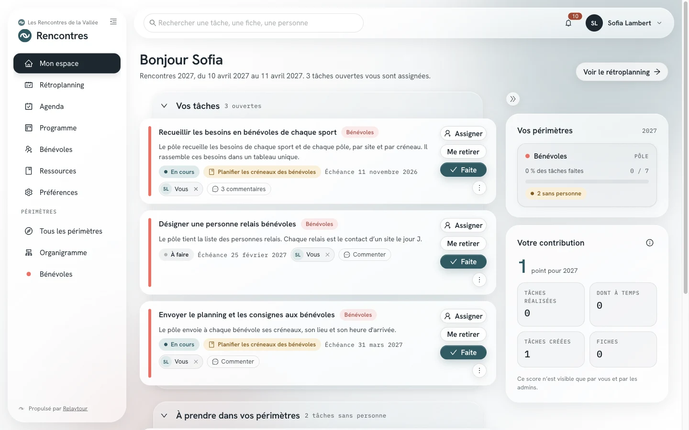
Écran Mon espace, sur l'organisation d'exemple livrée avec Relaytour. Les personnes et les tâches sont fictives.
Je m'en occupeMe retirerPrendre une tâche de votre périmètre, ou vous en retirer.
AssignerAssigner une tâche de votre périmètre à une autre personne de son équipe. Cette personne reçoit une notification qui porte votre nom. Le message de confirmation propose d'annuler. La croix à côté d'un nom retire la personne, après une confirmation.
CommenterOuvrir le fil de la tâche. Vous y écrivez un compte rendu, une information ou une question, et vous y lisez l'historique de la tâche. Une adresse web écrite dans un commentaire devient un lien. Les personnes assignées à la tâche reçoivent une notification. Vous modifiez et supprimez vos propres commentaires.
FaiteMarquer une tâche comme faite. Vous pouvez indiquer qui l'a réalisée, information visible par vous et par les admins.
Autres actionsMarquer en cours, remettre à faire ou abandonner. Une tâche ne se supprime pas : elle s'abandonne.
Votre score n'est visible que par vous et par les admins. Il compte les tâches réalisées, celles rendues à temps, les tâches créées et les fiches écrites.
Rétroplanning
/<activité>/retroplanning
Le rétroplanning couvre tous les périmètres de l'activité. Il regroupe les tâches de la période par mois, de la plus proche à la plus lointaine. Les filtres limitent l'affichage à un groupe de périmètres, aux tâches ouvertes ou en retard, à vos périmètres ou aux tâches qui vous sont assignées.
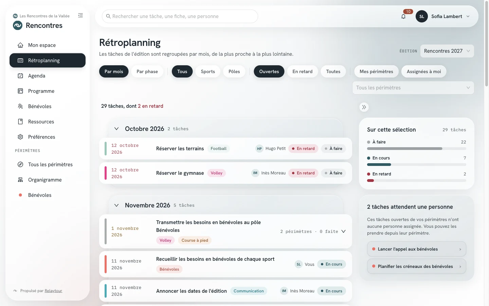
Écran Rétroplanning, sur l'organisation d'exemple. Les échéances sont fictives.
Une activité découpe sa période en phases, par exemple « Préparation » ou « Bilan ». Une tâche datée se range dans une phase par son échéance. Le regroupement « Par phase » affiche une section par phase, avec ses jours. Dans une phase, les tâches se rangent par périmètre. Les tâches sans échéance forment une dernière section, « Sans échéance ».
Par mois, les tâches qu'un périmètre a partagées avec plusieurs autres tiennent sur une ligne quand elles tombent le même jour. Cette ligne nomme chaque périmètre, compte les tâches faites et se déplie.
Par moisPar phaseChoisir le regroupement des tâches. Votre navigateur garde ce choix.
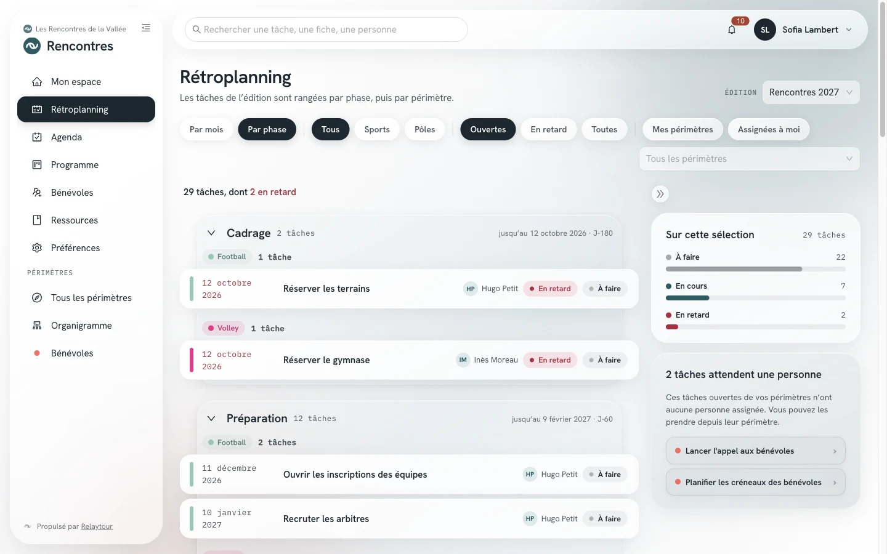
Le rétroplanning regroupé par phase, sur l'organisation d'exemple.
Aucune action ne se fait ici : une ligne mène à son périmètre. Vous y modifiez la tâche si vous êtes affecté·e à ce périmètre. Le panneau de droite signale les tâches de vos périmètres qui attendent encore une personne.
Agenda
/<activité>/agenda
L'agenda présente les repères de la période : ses phases, son premier et son dernier jour, et les dates clés placées par les admins de l'activité. Une date clé signale un jour qui compte pour toute l'équipe, par exemple un dossier à déposer ou une assemblée. L'agenda affiche aussi les réunions de l'activité et de ses périmètres, et les échéances des tâches de vos périmètres.
La liste range ces éléments par mois, à partir d'aujourd'hui. Chaque échéance mène à son périmètre. Sur un écran large, la vue « Mois » affiche une grille du lundi au dimanche, avec la phase en cours au-dessus.
ListeMoisChoisir l'affichage. La vue « Mois » n'existe pas sur un téléphone.
Échéances de mes périmètresAfficher ou masquer les échéances de vos tâches.
Jours passésRemonter avant aujourd'hui, jusqu'au début de la période.
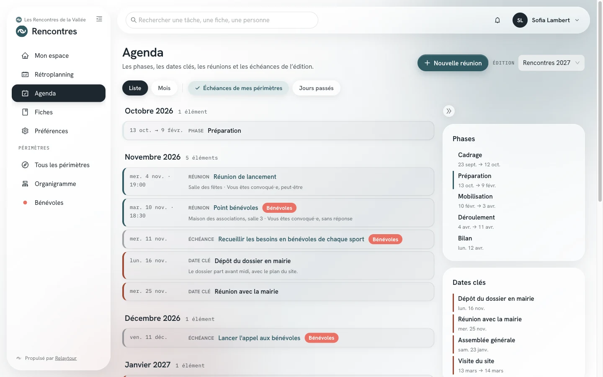
Écran Agenda, sur l'organisation d'exemple. Les dates sont fictives.
La colonne de droite liste les phases, puis les dates clés de la période. Un liseré marque la phase en cours.
Une réunion appartient à l'agenda d'un périmètre, ou à l'agenda global de l'activité, que tiennent ses admins. Vous créez les réunions de vos périmètres : un titre, un jour, une heure de début et de fin, un lieu, un lien de visio, une description et des tâches liées. Une réunion peut durer plusieurs jours, un mois au plus. Les horaires suivent le fuseau de votre organisation.
Une réunion convoque tout le périmètre, toute l'équipe de l'activité, ou des personnes choisies dans l'équipe. Chaque personne convoquée reçoit un mail, deux minutes plus tard, avec un fichier qui ajoute la réunion à son agenda. Elle répond dans l'espace organisateur. Une réponse envoyée depuis Outlook ou Google n'y arrive pas.
Nouvelle réunionCréer une réunion dans l'agenda d'un de vos périmètres. Le menu « Autres actions » d'une tâche propose aussi « Planifier une réunion », avec la tâche déjà liée.
Présent·eAbsent·ePeut-êtreRépondre à une convocation, dans le volet de la réunion. Vous changez votre réponse à tout moment.
ModifierChanger une réunion de votre périmètre. Un changement d'horaire, de lieu ou de lien envoie une nouvelle version aux personnes convoquées.
Annuler la réunionGarder la réunion dans l'agenda, marquée annulée. Chaque personne convoquée reçoit un mail d'annulation.
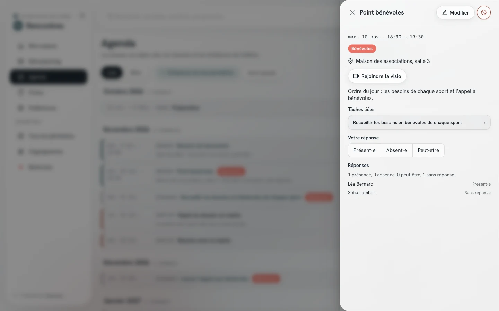
Le volet d'une réunion du pôle Bénévoles, sur l'organisation d'exemple.
Un sondage de dates propose plusieurs créneaux pour une réunion à venir. Un créneau est un jour, avec un horaire facultatif. Les personnes visées répondent à chaque créneau : oui, si besoin ou non. Une notification les prévient. Quand les réponses suffisent, une personne qui écrit dans l'agenda retient un créneau et crée la réunion, déjà remplie avec l'horaire et les personnes du sondage.
NouveauOuvrir un sondage depuis le panneau « Sondages de dates » de l'agenda.
OuiSi besoinNonRépondre à chaque créneau, puis « Enregistrer mes réponses ». Vous changez vos réponses tant que le sondage est ouvert.
Retenir ce créneauClore le sondage sur un créneau. Les réponses ne changent plus, et « Créer la réunion » prépare la réunion.
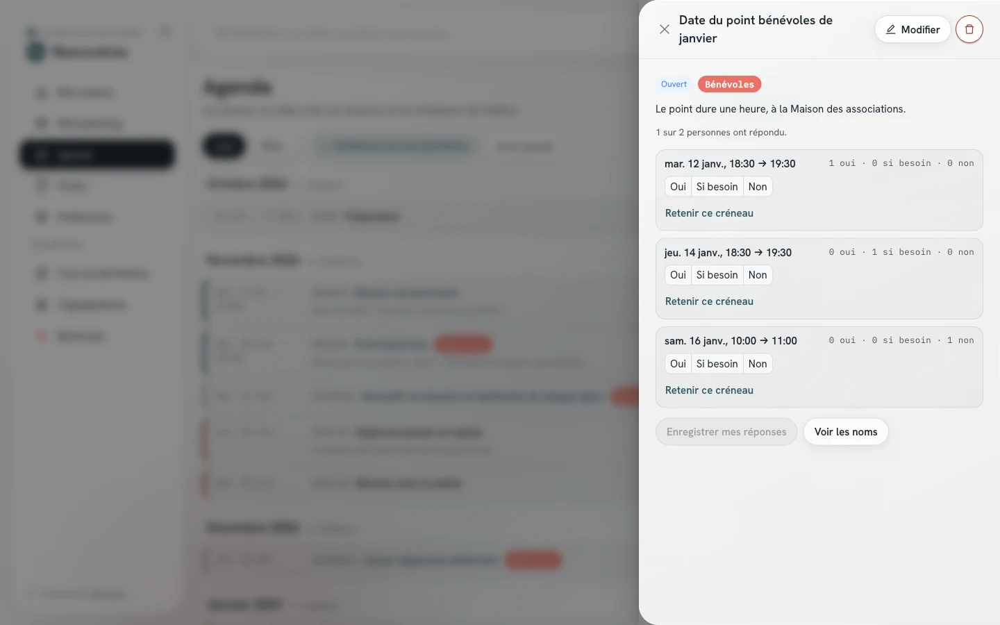
Un sondage de dates du pôle Bénévoles, sur l'organisation d'exemple.
Les personnes qui écrivent dans l'agenda d'une réunion lisent les réponses une à une. Une personne qui consulte un autre périmètre voit le titre et l'horaire de ses réunions, sans le lieu, le lien de visio ni la description. Quand vous quittez un périmètre, vous quittez aussi ses réunions à venir.
Programme
/<activité>/programme
Le programme décrit le déroulé du jour J, ou des jours J, de la période. Il se compose de séquences : un match, un accueil, une remise des prix. Une séquence porte un titre, un jour, une heure de début et de fin, un lieu facultatif et une description. Elle appartient à un périmètre, ou à toute l'activité quand ses admins la créent.
Chaque séquence place des personnes, cinquante au plus : des personnes de l'équipe, ou des bénévoles qui n'ont pas de compte. Une personne placée est responsable de la séquence ou vient en renfort. Vous créez et modifiez les séquences de vos périmètres. Les lieux appartiennent aux admins de l'activité.
GrillePar lieuMon jour JChoisir l'affichage. La grille range les séquences d'un jour par lieu et par heure ; elle n'existe pas sur un téléphone. « Mon jour J » liste les seules séquences où vous êtes placé·e.
Nouvelle séquenceAjouter une séquence au programme d'un de vos périmètres, puis y placer des personnes.
ImprimerImprimer le programme du jour affiché, sans le menu ni les boutons.
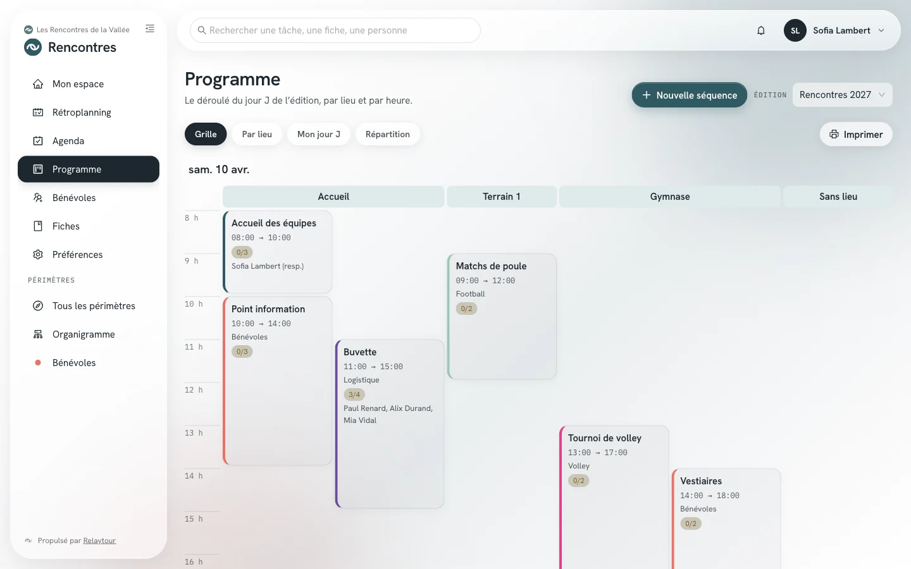
Le programme du jour J en grille, sur l'organisation d'exemple. Les noms sont fictifs.
Une séquence s'ouvre dans un volet. Le volet indique l'horaire, le lieu, le périmètre et les personnes placées avec leur rôle. La page d'un périmètre liste aussi ses séquences, dans le panneau « Jour J ».
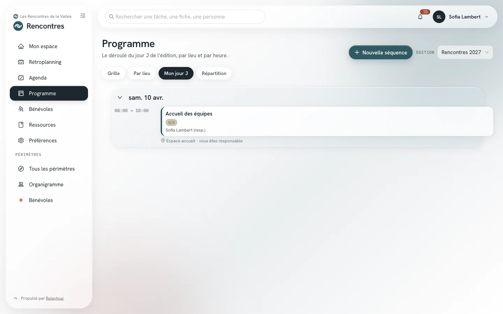
La vue « Mon jour J » d'une référente du pôle Bénévoles.
Une séquence peut aussi rechercher des bénévoles en renfort, avec des consignes publiques. Sa jauge s'affiche alors dans la grille, par exemple « 0/3 ». La vue Répartition montre les heures qui manquent de monde, et les bénévoles disponibles à y placer.
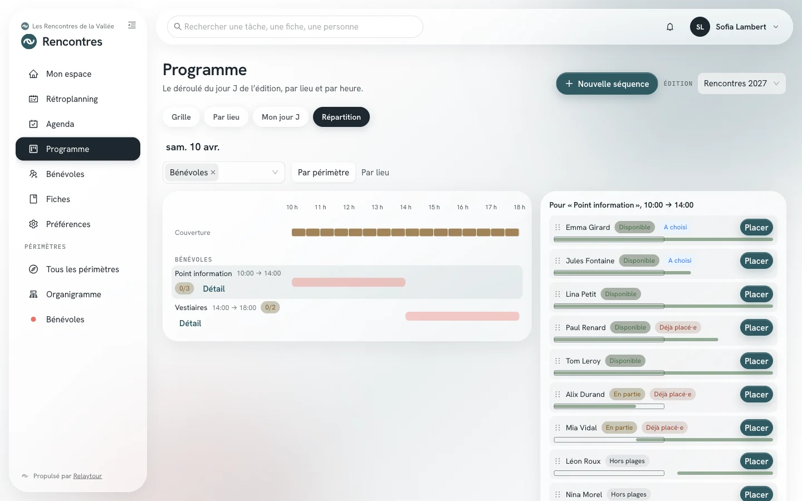
La vue « Répartition » d'une référente du pôle Bénévoles.
Vos séquences entrent dans votre abonnement à l'agenda, décrit dans vos Préférences. Elles ne convoquent personne de l'équipe par mail. Le mode d'emploi Recruter et répartir les bénévoles décrit les renforts, les appels et la vue « Répartition ».
Bénévoles
/<activité>/benevoles
L'écran « Bénévoles » liste les personnes qui aident l'activité sans compte dans l'application. Il a trois onglets : « Fiches », « Candidatures » et « Appels ».
Chaque fiche porte un nom, et parfois un téléphone, une adresse et une note. Elle indique le nombre de séquences où la personne est placée, et l'état de son lien personnel.
Vous créez une fiche avec l'accord de la personne, puis vous la placez dans les séquences de vos périmètres. Vous modifiez les fiches que vous avez créées. Les admins de l'activité modifient et suppriment toutes les fiches.
Nouvelle ficheEnregistrer une ou un bénévole. La case d'accord est obligatoire.
Prévenir par mailAvec une adresse, la première place envoie à la personne son lien personnel. Décochez l'option pour une personne que vous joignez autrement.
Importer une listeFaire entrer les bénévoles d'un export de billetterie, d'un formulaire ou d'un tableur, pour les séquences de votre périmètre. Le mode d'emploi Importer une liste décrit l'assistant.
Les onglets « Candidatures » et « Appels » servent au recrutement par une adresse publique. Le mode d'emploi Recruter et répartir les bénévoles les décrit.
Les coordonnées d'une fiche se lisent par les admins de l'activité, par la personne qui l'a créée et par les personnes d'un périmètre où la ou le bénévole est placé·e. Ailleurs, la cellule indique « Réservé ». Le serveur supprime une fiche qui ne sert plus depuis deux ans.
Tous les périmètres
/<activité>/perimetres
Cette page présente chaque périmètre de l'activité avec sa description. Elle les range en trois blocs : vos périmètres, vos souhaits, puis les autres périmètres. Chaque périmètre indique le nombre de personnes encore recherchées. Ce nombre est une information : vous pouvez formuler un souhait pour un périmètre au complet. La page ne montre ni tâche, ni fiche, ni nom de personne.
Je suis intéressé·eFormuler un souhait pour un périmètre de la période en cours, quand l'activité est ouverte aux souhaits. Un admin confirme ensuite les affectations.
Retirer mon souhaitRetirer un souhait formulé.
Ouvrir le périmètreAller à la page d'un périmètre où vous êtes affecté·e.
Consulter les tâchesOuvrir en consultation un périmètre où vous n'êtes pas affecté·e. Ce lien apparaît dès votre première affectation dans l'activité.
Vous ne voyez que les activités de votre équipe : celles où vous êtes affecté·e, et celles auxquelles un admin vous a rattaché·e. Dans une activité où vous n'avez pas de périmètre, vous ne voyez que cette page, l'organigramme et vos préférences, jusqu'à votre première affectation.
Organigramme
/<activité>/organigramme
L'organigramme présente l'équipe de l'activité pour la période en cours. Il affiche le contact de l'activité, ses admins, puis chaque périmètre avec son contact principal et ses référentes et référents.
Une adresse personnelle s'affiche seulement avec deux accords : le réglage de l'activité, choisi par ses admins, et l'accord de la personne, donné dans ses préférences. Le lien d'une adresse ouvre la messagerie de votre appareil.
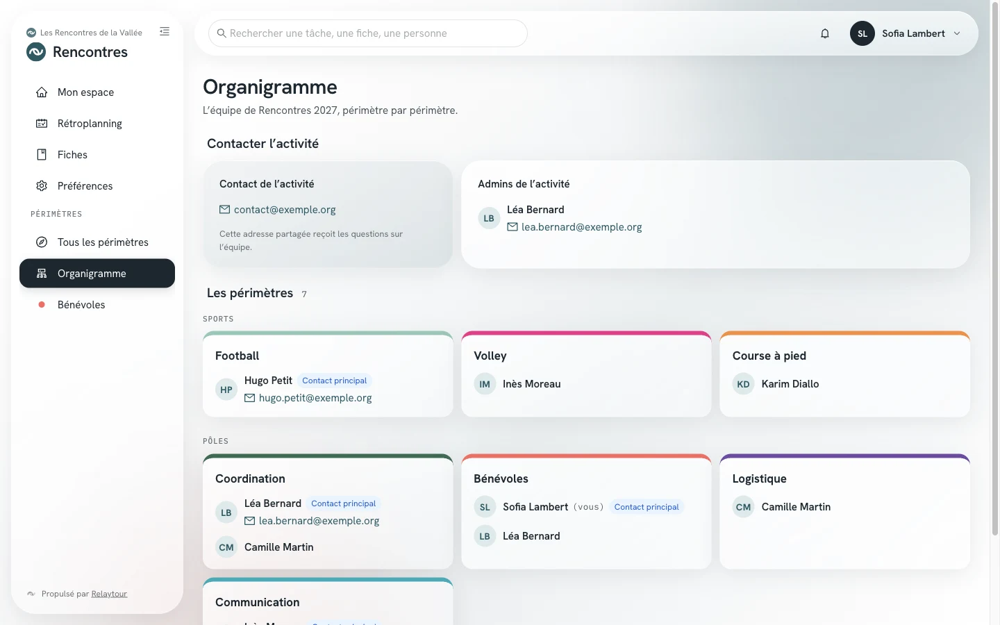
L'organigramme d'une activité, sur l'organisation d'exemple.
Une personne sans affectation dans l'activité voit les admins, le contact principal de chaque périmètre et le contact de l'activité. Elle ne voit aucune adresse personnelle.
Un périmètre
/<activité>/perimetres/<périmètre>
La page de votre périmètre réunit ses tâches, son avancement, ses fiches méthode et les personnes affectées. Les tâches se filtrent par statut : ouvertes, en retard, faites, abandonnées ou toutes.
Le contact principal du périmètre, s'il est désigné, apparaît en tête des personnes affectées avec la mention « Contact principal ». C'est la personne à solliciter en premier. Elle a les mêmes droits que les autres référentes et référents.
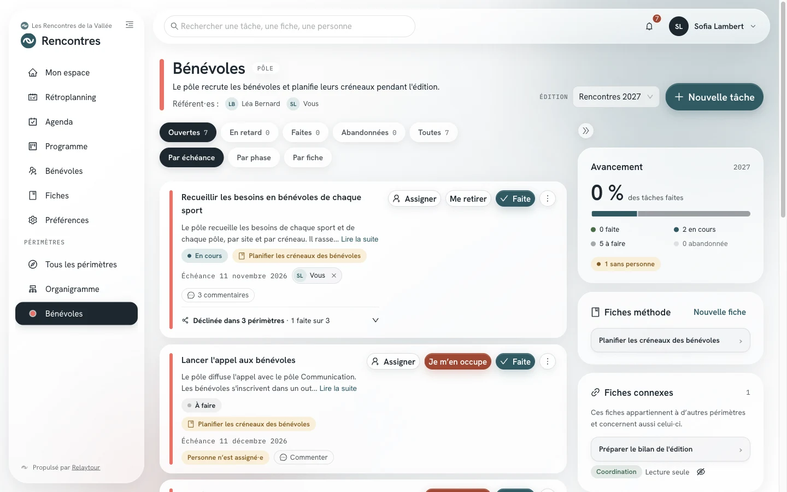
Page d'un périmètre, sur l'organisation d'exemple.
Les tâches se lisent de trois façons. « Par échéance » garde une seule liste. « Par phase » range les tâches datées dans les phases de l'activité, et place en dernier les tâches sans échéance. « Par fiche » les range sous la fiche méthode liée, et place en dernier les tâches sans fiche.
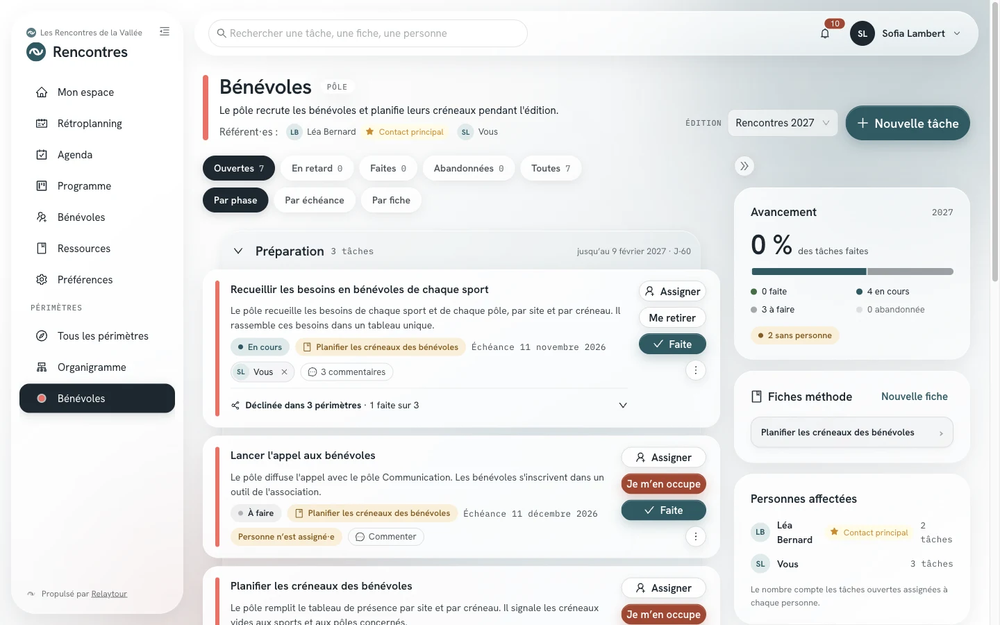
Les tâches d'un périmètre regroupées par phase, sur l'organisation d'exemple.
Par échéancePar phasePar ficheChoisir le regroupement des tâches. Votre navigateur garde ce choix. Le regroupement par fiche demande d'être affecté·e au périmètre.
Nouvelle tâcheAjouter une tâche à votre périmètre : titre, description, échéance et fiche liée. La case « Je m'en occupe » est cochée par défaut.
ModifierCorriger une tâche existante depuis le menu « Autres actions » de sa carte.
Prochaines réunionsLire les cinq prochaines réunions du périmètre dans la colonne de droite, et en créer une avec « Nouvelle ».
Proposer une personneProposer à un admin une personne qui veut rejoindre votre périmètre : son prénom et son nom, son adresse, et un mot facultatif. Un admin examine la proposition, puis invite la personne. Elle ne reçoit aucun mail avant sa décision.
Ces actions sont ouvertes aux personnes affectées au périmètre pour la période consultée. Une période archivée passe ses tâches en lecture seule.
Chaque tâche porte un fil. Le bouton « Commenter » l'ouvre. Vous y notez où vous en êtes, et vous y lisez les commentaires de votre équipe et l'historique de la tâche. Les personnes assignées à la tâche reçoivent une notification, sans mail immédiat.
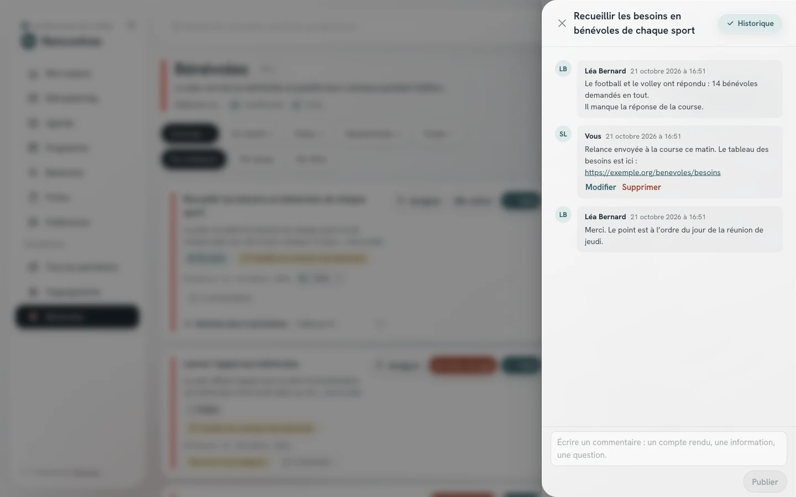
Le fil d'une tâche, sur l'organisation d'exemple. Les personnes et les commentaires sont fictifs.
Une tâche se partage avec d'autres périmètres de l'activité. Un pôle demande par exemple la même chose à chaque sport. Chaque périmètre choisi reçoit sa propre tâche, avec son statut, son échéance et ses personnes assignées. Votre tâche indique où en sont les autres, par exemple « 1 faite sur 3 ».
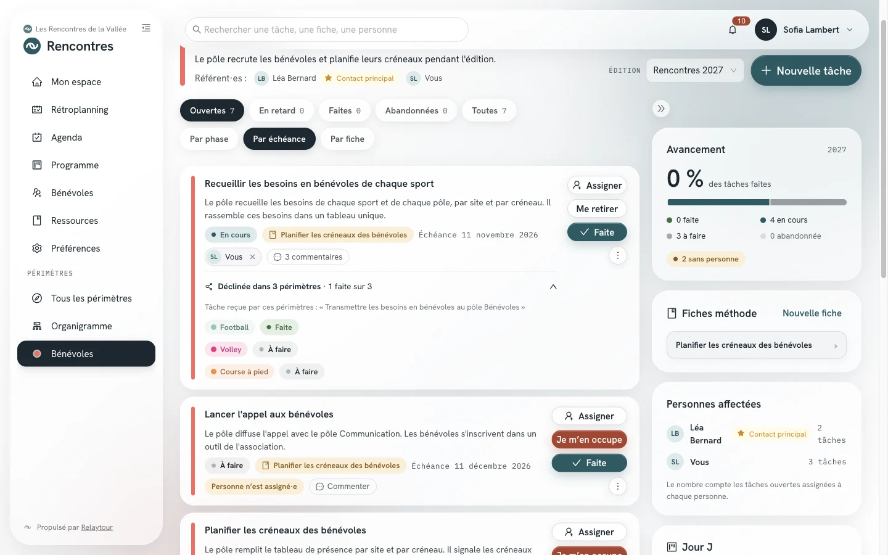
Une tâche partagée et le détail de ses périmètres, sur l'organisation d'exemple.
Décliner dans d'autres périmètresChoisir les périmètres qui reçoivent la tâche, à sa création ou depuis le menu « Autres actions ». Un bouton par groupe les ajoute tous. Le titre, la description et l'échéance de ces tâches peuvent différer des vôtres.
Déclinée dans 3 périmètresDéplier le détail : un périmètre par ligne, avec le statut de sa tâche, ou son accord tant qu'il n'a pas répondu.
AccepterRefuserRépondre à une tâche qu'un autre périmètre propose au vôtre. Acceptée, elle entre parmi vos tâches et indique le périmètre qui la demande. Refusée, elle n'y entre pas, et ce périmètre l'apprend.
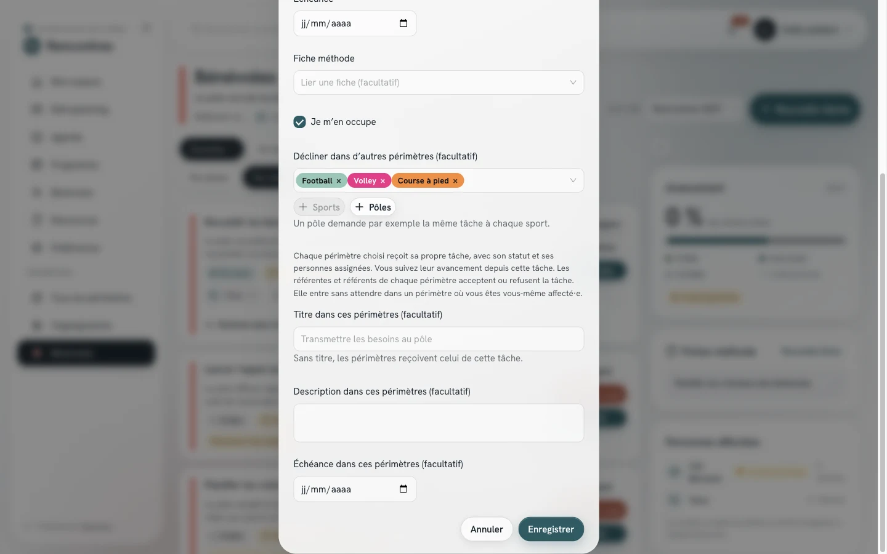
Le partage d'une tâche à sa création, sur l'organisation d'exemple.
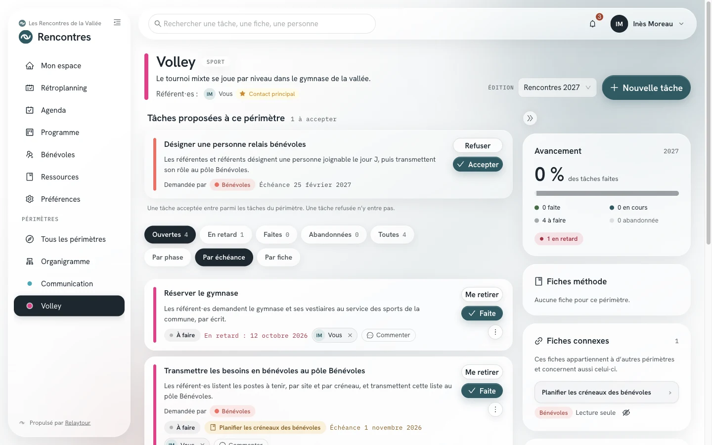
Une tâche proposée à un périmètre, sur l'organisation d'exemple.
Tant que vous ne l'avez pas acceptée, une tâche proposée ne compte ni dans vos tâches, ni dans l'avancement de votre périmètre, ni dans vos rappels. Chaque tâche garde ensuite son statut : abandonner ou modifier l'une ne change pas les autres. Un admin de l'activité peut ajouter une tâche à votre périmètre sans votre accord, même après un refus.
Le panneau « Proposer une personne » liste vos propositions et leur état : en attente, acceptée ou refusée. Vous retirez une proposition tant qu'elle attend.
Vous consultez aussi les autres périmètres de votre activité. Leur page affiche les tâches, l'avancement et les personnes affectées. Elle ne montre aucune fiche et ne propose aucune action, et un bandeau le rappelle. Pour rejoindre un périmètre, formulez un souhait dans « Tous les périmètres ».
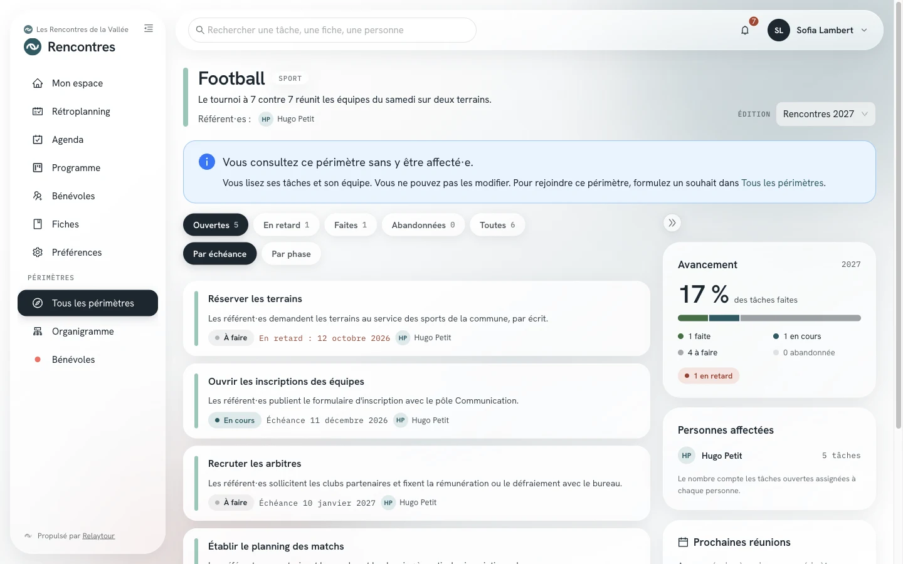
Un périmètre en consultation, sur l'organisation d'exemple.
Toute l'équipe de l'activité lit le titre et la description d'une tâche. N'y écrivez aucune coordonnée personnelle.
Une fiche d'un autre périmètre peut concerner aussi le vôtre. Le panneau « Fiches connexes » la présente sous vos fiches méthode, avec son périmètre d'origine et la mention « Lecture seule ». Une tâche partagée acceptée y ajoute aussi la fiche qu'elle cite.
MasquerRetirer une fiche connexe de votre panneau quand elle ne sert pas à votre périmètre. Elle reste lisible par son lien, et le masquage vaut pour toute l'équipe du périmètre.
Voir les fiches masquéesRetrouver les fiches masquées, puis en afficher une de nouveau.
Les ressources
/<activité>/fiches
L'écran « Ressources » réunit les fiches méthode et, quand l'association en a lié, les documents de son fournisseur cloud. Les fiches méthode expliquent comment mener chaque étape de l'organisation. Elles se filtrent par périmètre, se cherchent par mot et s'affichent en cartes ou en liste condensée.
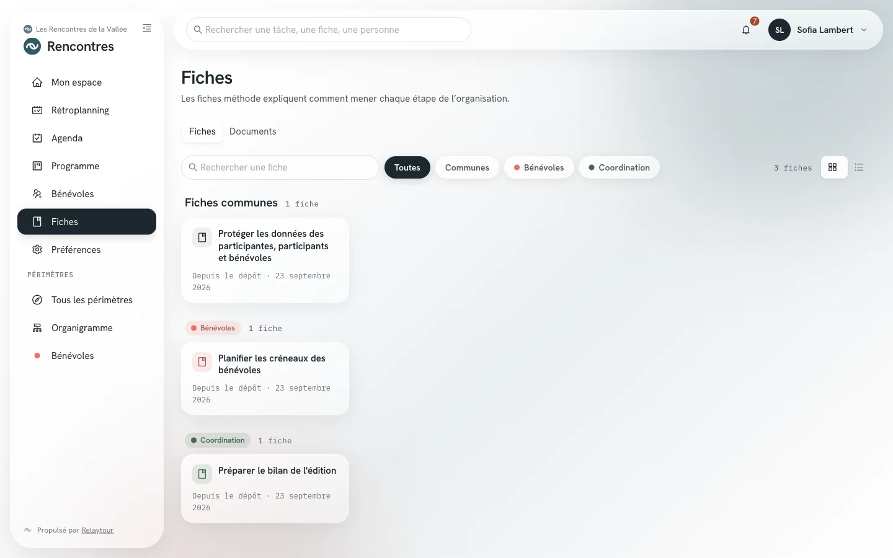
Écran Ressources, vue Fiches, sur l'organisation d'exemple.
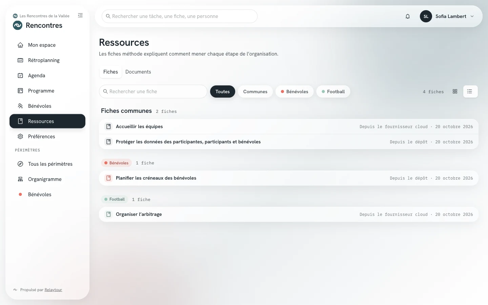
Le même écran en liste condensée.
Chaque fiche indique sa date de mise à jour et son auteur, ou la mention « Depuis le dépôt » quand elle vient du dossier de contenu de l'organisation.
Quand l'association a connecté son fournisseur cloud, la vue « Documents » s'ajoute à côté de la vue « Fiches ». Cette vue présente les dossiers liés à toute l'activité, puis ceux de vos groupes et de vos périmètres. Un clic ouvre un dossier, puis un document. Relaytour affiche un PDF, une image, un texte ou un fichier Markdown, sans en garder de copie. Un document bureautique s'affiche converti en PDF par le fournisseur. Un autre document se télécharge, ou s'ouvre chez le fournisseur.
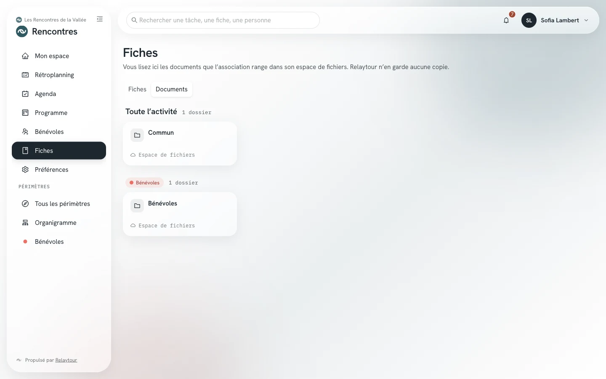
La vue Documents, sur l'organisation d'exemple.
Un admin de l'organisation choisit les dossiers liés et leurs lecteurs. Vous ne voyez que les dossiers de toute l'activité, et ceux qui servent vos périmètres directement ou par leur groupe.
Une fiche méthode
/<activité>/fiches/<fiche>
Une fiche décrit une démarche étape par étape, souvent avec ses échéances en J-n. Le panneau « Tâches liées » donne les tâches de la période en cours qui renvoient à cette fiche.
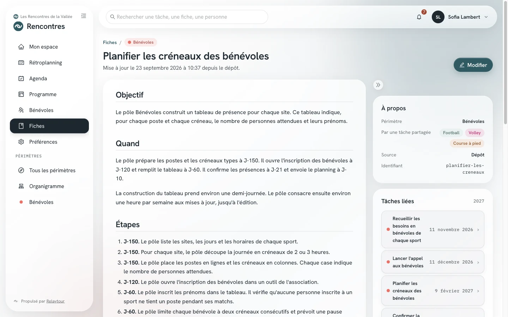
Une fiche méthode, sur l'organisation d'exemple.
ModifierCorriger la fiche, si un admin vous a accordé un droit de rédaction sur le périmètre. Chaque enregistrement crée une version. L'éditeur s'ouvre en mode visuel, avec une barre de mise en forme, décrite dans le guide Écrire une fiche en Markdown.
Le panneau « À propos » indique les périmètres et les groupes que la fiche concerne aussi. Les personnes de ces périmètres la lisent sans la modifier. Dans le texte, une mention comme @logistique ou @groupe:sport s'affiche comme une étiquette ; celle d'un groupe liste ses périmètres. Le guide Écrire une fiche en Markdown décrit la liste « Concerne aussi ».
Le panneau « Documents liés » cite les documents du fournisseur cloud qui accompagnent la fiche : un modèle de tableau, un plan, une charte. Un clic ouvre le document. Un document marqué « Réservée au périmètre d'origine » vient d'un dossier que vous ne lisez pas : vous voyez son nom sans l'ouvrir.
Quand la fiche concerne aussi d'autres périmètres, la personne qui la rédige voit quels documents liés ces périmètres n'ouvriront pas. L'avertissement s'affiche sous la liste « Concerne aussi » de l'éditeur. Dans la fiche, le détail se lit par le bouton d'alerte du document. Un admin de l'organisation étend alors le dossier lié, ou ouvre ce seul document aux lecteurs de la fiche.
Lier un documentChoisir un dossier ou un fichier dans un dossier lié qui sert le périmètre de la fiche, ou toute l'activité. Ce bouton suit le droit de rédaction. Une fiche porte trente documents liés au plus.
RetirerRetirer un document lié de la fiche. Le document reste chez le fournisseur cloud.
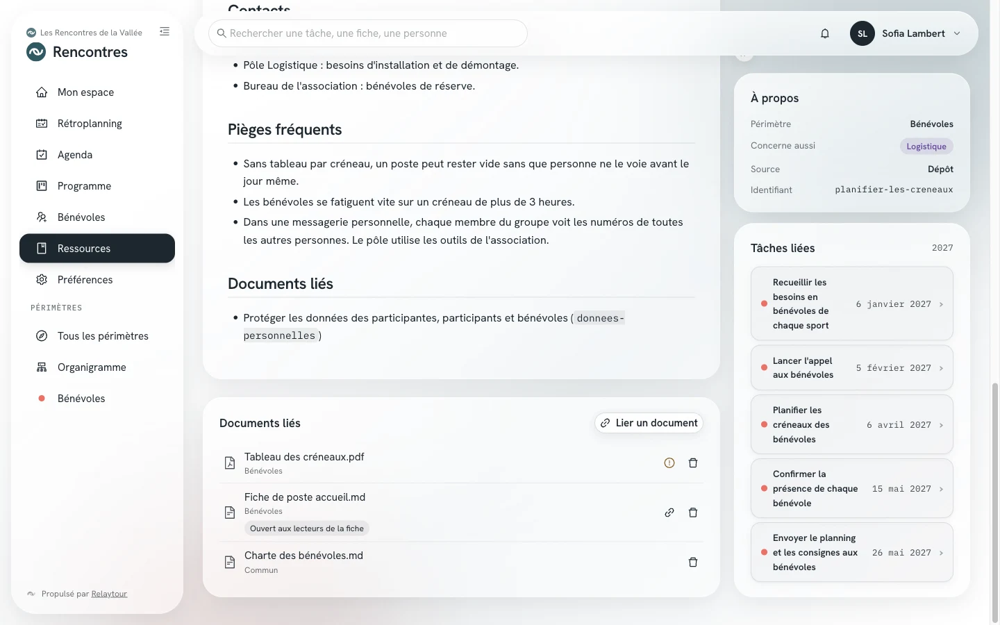
Les documents liés d'une fiche, sur l'organisation d'exemple.
Écrivez les contacts sous forme de rôles, sans adresse ni numéro personnels : une fiche qui en contient ne peut pas être reversée dans le dépôt de l'organisation. L'historique des versions est réservé aux admins.
Préférences
/<activité>/preferences
Vous choisissez les mails que vous recevez, et les notifications de vos périmètres. Les notifications de vos tâches restent visibles dans l'espace, quel que soit votre choix pour les mails.
Vos préférences valent pour l'organisation affichée. Si vous appartenez à plusieurs organisations, chacune garde ses propres réglages.
Les admins y trouvent aussi le panneau « Votre messagerie », décrit dans le mode d'emploi « Choisir votre messagerie ».
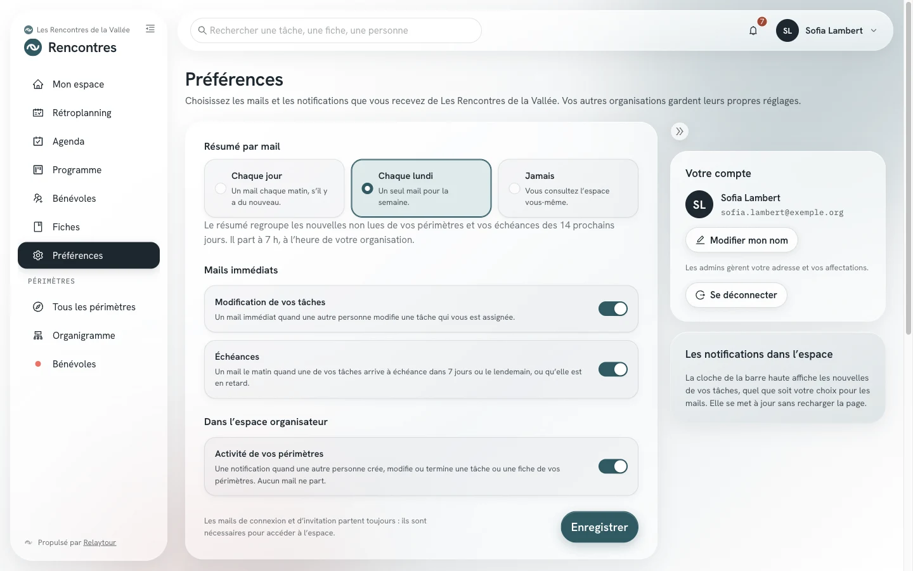
Écran Préférences, sur l'organisation d'exemple.
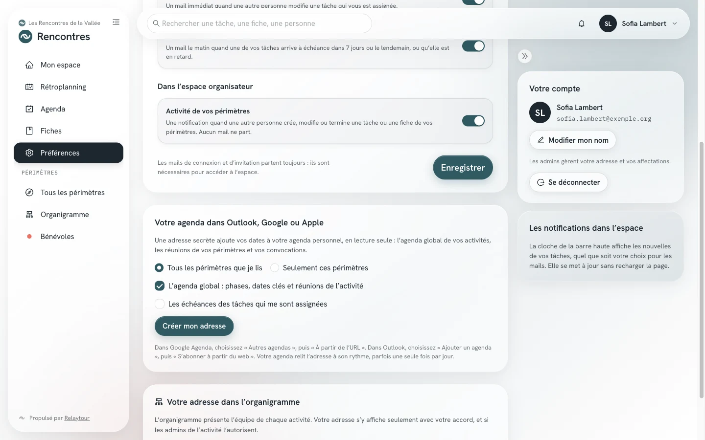
L'abonnement à l'agenda, dans les préférences.
L'adresse de votre abonnement s'affiche une seule fois, à sa création : copiez-la aussitôt. Elle donne accès au contenu de votre agenda : gardez-la pour vous. Relaytour revérifie vos droits à chaque lecture : un périmètre que vous quittez disparaît de votre agenda. Google Agenda relit une adresse à son rythme, parfois une seule fois par jour.
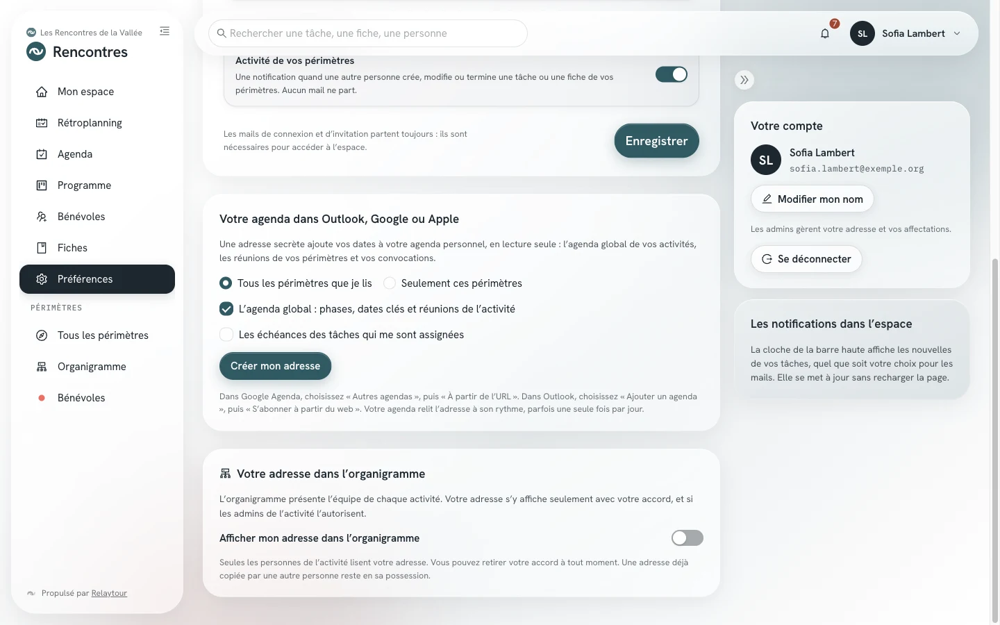
L'accord pour l'organigramme, dans les préférences.
Modifier mon nomCorriger votre prénom et votre nom, dans le panneau « Votre compte ». Ce nom s'affiche dans toutes vos organisations.
Chaque jourChaque lundiJamaisRégler le résumé par mail. Il reprend les nouvelles de vos périmètres et vos échéances des 14 prochains jours, et part à 7 h.
Modification de vos tâchesRecevoir un mail quand une autre personne modifie une tâche qui vous est assignée.
ÉchéancesRecevoir un mail quand une de vos tâches arrive à échéance ou passe en retard.
Demandes pour rejoindre l'équipeRecevoir un mail, une fois par heure au plus, quand une activité que vous administrez reçoit des demandes. Ce réglage s'affiche pour les admins seulement.
Créer mon adresseAbonner votre agenda personnel (Outlook, Google, Apple) à Relaytour, en lecture seule. Vous choisissez vos périmètres, l'agenda global de vos activités et les échéances des tâches qui vous sont assignées. Vos convocations y figurent toujours.
Nouvelle adresseRévoquerRemplacer ou fermer l'adresse de votre abonnement. L'ancienne adresse cesse aussitôt de servir.
Afficher mon adresse dans l'organigrammeAccepter que votre adresse s'affiche dans l'organigramme des activités de votre organisation, si leurs admins l'autorisent. Seules les personnes de l'activité la lisent. Vous retirez votre accord à tout moment.
Activité de vos périmètresÊtre prévenu·e par la cloche quand une autre personne crée, modifie ou termine une tâche ou une fiche de vos périmètres. Aucun mail ne part pour ces notifications.
Votre nom, votre adresse et vos affectations sont gérés par les admins. Les mails de connexion et d'invitation partent toujours.
En équipe
Travailler à plusieurs sur un périmètre
Plusieurs référentes et référents partagent souvent un périmètre. Relaytour met vos écrans à jour pendant que les autres travaillent, et vous avertit quand deux saisies se croisent. Quatre habitudes évitent la plupart de ces croisements.
Prenez une tâche avant de la modifier
Cliquez sur « Je m'en occupe » avant de corriger une tâche ou de la mener. Votre nom s'affiche sur la tâche, et votre équipe voit qu'elle est prise.
Passez-la « en cours » quand vous commencez
Le menu « Autres actions » propose « Marquer en cours ». Les autres référentes et référents du périmètre reçoivent alors une notification qui annonce que vous avez commencé.
Rédigez une fiche à tour de rôle
Prévenez votre équipe avant de reprendre une fiche. Relaytour ne fusionne pas deux rédactions menées en même temps : la seconde personne qui enregistre choisit entre les deux textes.
Rechargez avant d'écraser
Quand Relaytour annonce un conflit, lisez d'abord la version de l'autre personne. « Écraser » remplace son travail par le vôtre. Réservez ce choix à une version que vous avez lue.
Vos écrans suivent le travail de votre équipe
Quand une autre personne modifie une tâche, une fiche, un périmètre ou l'équipe, votre écran affiche le changement en quelques secondes. Vous ne rechargez pas la page. La cloche reçoit ses notifications de la même façon.
Ce suivi s'arrête quand l'onglet est caché, et l'écran se relit à votre retour. Sur un réseau qui bloque ce suivi, les écrans se relisent chaque minute. L'éditeur d'une fiche ne change jamais pendant votre rédaction.
Le bandeau « Vos accès ont changé, ou votre session a pris fin. » signale que l'écran ne peut plus se relire. Rechargez alors la page.
Deux personnes modifient la même tâche
Relaytour n'enregistre pas votre modification à la place d'une modification que vous n'avez pas vue. Une fenêtre indique qui a modifié la tâche, et quand.
RechargerAbandonner votre saisie et afficher la version de l'autre personne.
ÉcraserEnregistrer votre version à la place de la sienne.
La même fenêtre s'ouvre quand le statut d'une tâche a changé avant votre clic. Elle donne le statut actuel, sans nommer la personne qui l'a changé. Prendre une tâche ou vous en retirer ne provoque aucun conflit.
Deux personnes rédigent la même fiche
Si une autre version de la fiche a été enregistrée pendant votre rédaction, l'éditeur n'enregistre pas la vôtre. Un avis indique qui a enregistré cette version, et quand. Votre texte reste à l'écran.
Voir la version actuelleOuvrir la fiche enregistrée dans un nouvel onglet, pour la comparer à votre texte.
Copier mon texteCopier votre rédaction, pour la reporter à la main dans la version actuelle.
Écraser avec mon texteEnregistrer votre texte comme nouvelle version. La version de l'autre personne reste dans l'historique, et un admin peut la restaurer.
L'éditeur garde aussi un brouillon de votre rédaction dans votre navigateur. Si vous quittez l'éditeur sans enregistrer, il vous propose à votre retour « Reprendre le brouillon » ou « Supprimer le brouillon ».
Le brouillon reste dans ce navigateur : il n'existe sur aucun autre appareil. Il est effacé quand vous enregistrez, quand vous abandonnez la rédaction et quand vous vous déconnectez.
La cloche annonce l'activité de vos périmètres
La cloche compte les notifications non lues de l'organisation affichée. Son tiroir les range par activité, en groupes qui se replient. Chaque notification affiche son périmètre au-dessus de son texte. Le bouton « Tout lire » d'un groupe marque ses notifications comme lues.
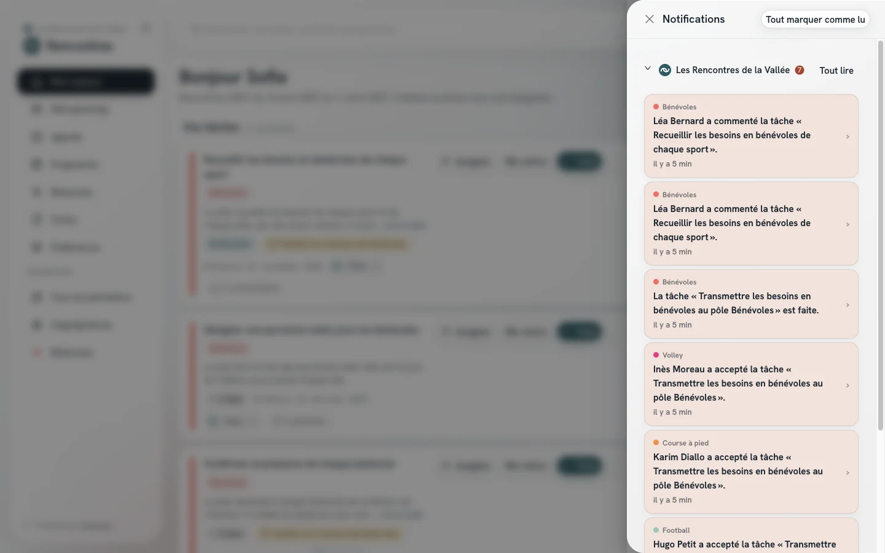
Le tiroir de la cloche, sur l'organisation d'exemple. Les personnes sont fictives.
Si vous appartenez à plusieurs organisations, l'encadré « Vous avez d'autres notifications dans vos organisations » liste celles qui ont du nouveau. Chacune s'ouvre dans un nouvel onglet, et l'onglet d'origine garde la sienne. Dans l'application installée, l'organisation change dans la même fenêtre.
Quand une autre personne crée, modifie, commence, termine ou abandonne une tâche de votre périmètre, vous recevez une notification. Vous en recevez une aussi quand elle crée ou modifie une fiche du périmètre. Un clic sur la notification d'une tâche ouvre le périmètre et met cette tâche en évidence.
Pour une fiche, ou pour une tâche qui ne vous est pas assignée, aucun mail ne part. Le réglage « Activité de vos périmètres », dans vos Préférences, désactive ces notifications.
Une tâche qui vous est assignée garde sa notification, quel que soit ce réglage. Un mail vous prévient aussi quand une autre personne la modifie ou change son statut, selon le réglage « Modification de vos tâches ».
Une tâche terminée est annoncée sans nom : seuls la personne qui l'a cochée et les admins savent qui l'a terminée.
Bon à savoir
Quatre repères
Vous agissez dans vos périmètres
Vous modifiez les tâches et vous lisez les fiches des périmètres où vous êtes affecté·e. Vous consultez les tâches des autres périmètres de l'activité, sans leurs fiches. Une affectation passée garde l'accès aux archives du périmètre.
Les affectations viennent des admins
Vous formulez un souhait dans « Tous les périmètres », et un admin procède aux affectations. Une personne extérieure à l'équipe dépose une demande par le formulaire public, quand un admin l'a ouvert.
Plusieurs activités
Si vous participez à plusieurs activités, un bouton en haut du menu permet de changer d'activité. Il reste masqué quand vous n'en voyez qu'une.
Le vocabulaire suit l'activité
Une période s'appelle édition pour un événement, saison pour une section, mandat pour une instance. Les groupes de périmètres portent les noms déclarés par l'activité.
Si un bandeau apparaît en haut de l'écran
« Cette organisation est en lecture seule » signifie que plus aucune modification n'est acceptée. « Cette activité est archivée » signifie que l'activité reste consultable, sans modification.
Pour aller plus loin
Les modes d'emploi des admins
Les admins disposent en plus des groupes « Gérer l'activité » et « Gérer l'organisation » dans le menu. Leurs modes d'emploi le décrivent, en complément de celui-ci.